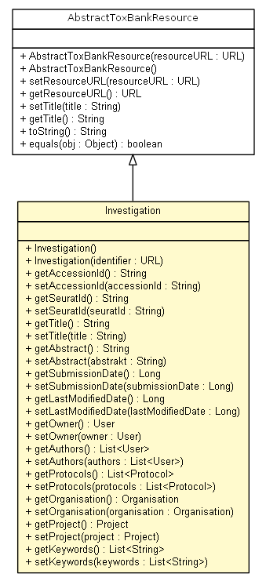

net.toxbank.client.resource
Class Investigation

java.lang.Object
 net.toxbank.client.resource.AbstractToxBankResource
net.toxbank.client.resource.Investigation
net.toxbank.client.resource.AbstractToxBankResource
net.toxbank.client.resource.Investigation
- All Implemented Interfaces:
- Serializable, IToxBankResource
public class Investigation
- extends AbstractToxBankResource
An investigation as represented in the toxbank repository
- See Also:
- Serialized Form
Investigation
public Investigation()
Investigation
public Investigation(URL identifier)
getAccessionId
public String getAccessionId()
setAccessionId
public void setAccessionId(String accessionId)
getTitle
public String getTitle()
- Specified by:
getTitle in interface IToxBankResource- Overrides:
getTitle in class AbstractToxBankResource
setTitle
public void setTitle(String title)
- Specified by:
setTitle in interface IToxBankResource- Overrides:
setTitle in class AbstractToxBankResource
getAbstract
public String getAbstract()
setAbstract
public void setAbstract(String abstrakt)
getSubmissionDate
public Long getSubmissionDate()
setSubmissionDate
public void setSubmissionDate(Long submissionDate)
getLastModifiedDate
public Long getLastModifiedDate()
setLastModifiedDate
public void setLastModifiedDate(Long lastModifiedDate)
getOwner
public User getOwner()
setOwner
public void setOwner(User owner)
getAuthors
public List<User> getAuthors()
setAuthors
public void setAuthors(List<User> authors)
getProtocols
public List<Protocol> getProtocols()
setProtocols
public void setProtocols(List<Protocol> protocols)
getOrganisation
public Organisation getOrganisation()
setOrganisation
public void setOrganisation(Organisation organisation)
getProject
public Project getProject()
setProject
public void setProject(Project project)
getKeywords
public List<String> getKeywords()
setKeywords
public void setKeywords(List<String> keywords)
Copyright © 2012 ToxBank project. All Rights Reserved.